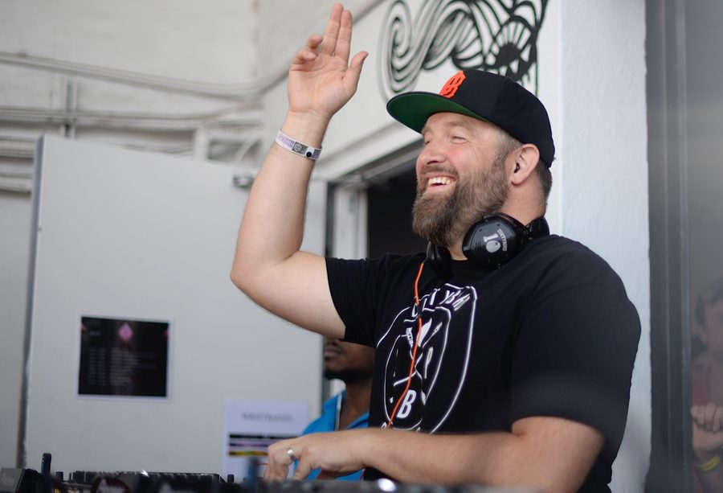

Claude VonStroke back for Parklife



The hunger for news on what is one of the year’s biggest festival tours continues unabated, and here at ITM we’ve kept our ear to the ground. The latest Parklife lineup leak has revealed that San Francisco’s Claude VonStroke will be back in late September to play Fuzzy’s national tour.
The dates have made a sneaky appearance on the website of the local distributor responsible for putting VonStroke’s recent Fabric compilation on the record shelves, so it seems that his ever-appreciative Australian fans will be getting another chance to enjoy his unmistakable brand of tech house sooner than they thought. VonStroke was last here in January, his third trip in as many years, but with his Dirtybird label going from strength to strength, he’ll make a welcome addition to Parklife lineup.
Punters got excited last month when it was revealed that both MSTRKRFT and Lady Sovereign had indicated they would be here for the national tour that’s traditionally marked the beginning of the summer season. Names like UK scenester Erol Akan and electro guru Tiga have since been added to the rumour mill.
Stay tuned to ITM for updates on Parklife 2009 as they come to hand!